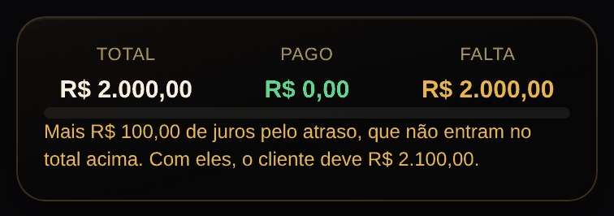
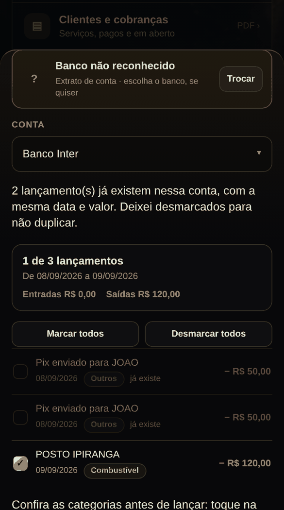
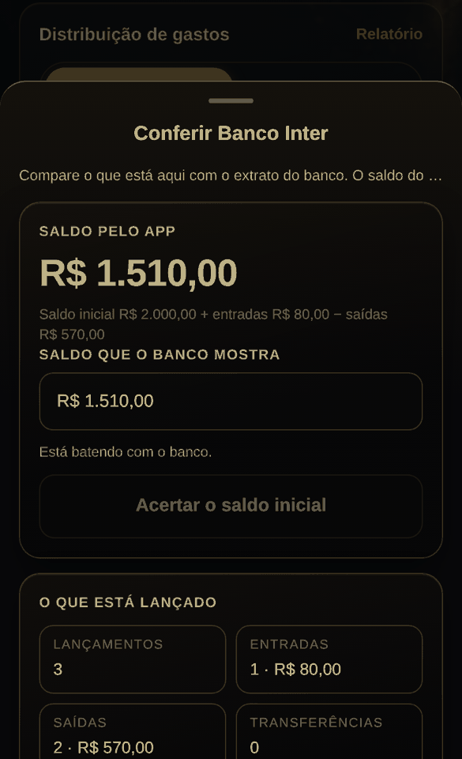
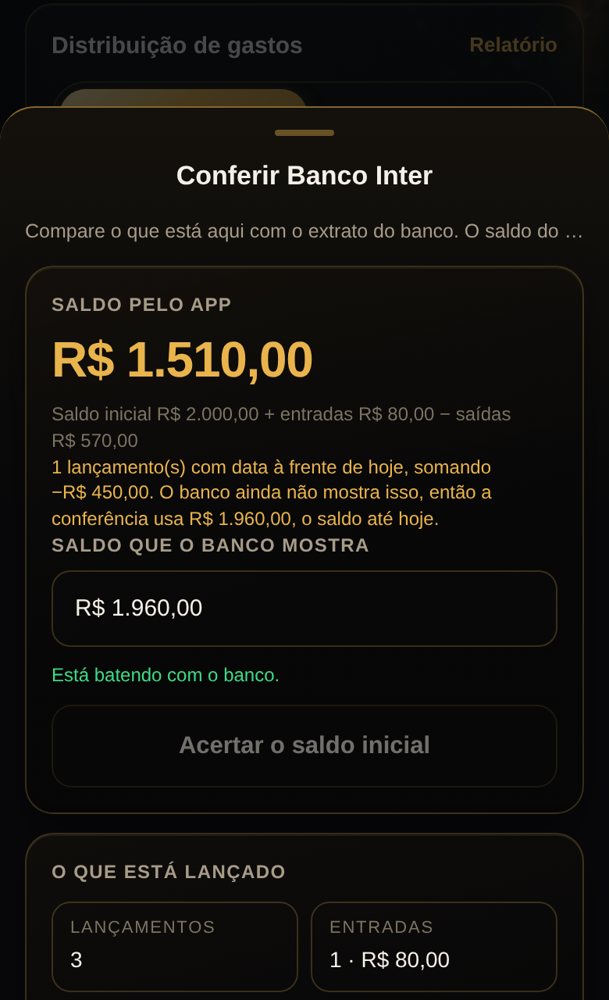

4 esperando a sua decisão · nada disso está no ar.
Proposta 0003
O total do dia somava por um critério, o do período por outro
AntesDepois
Na mesma tela de Transações, o número do cabeçalho do dia incluía o
pagamento de fatura, e o total de "Saídas" do período não incluía. Os dois
estavam certos cada um no seu critério, mas juntos se contradiziam: quem
somasse os dias na mão nunca chegava ao total de baixo.
No print, um dia com a fatura de R$ 500,00 paga e um gasto de R$ 120,00. O
cabeçalho dizia −R$ 620,00; passa a dizer −R$ 120,00, que é o que aquele
dia custou de verdade — as compras que formaram a fatura já foram contadas
no mês em que aconteceram.
O que a proposta faz: o total do dia passa a usar a mesma régua do total de
"Saídas" do período.
O que ela NÃO faz: não some com a linha nem muda o valor dela. A fatura
continua listada, com os R$ 500,00, e com o aviso de que não conta como
despesa. (A proposta 0001 deixa esse aviso legível, hoje ele é cortado.)
Risco: baixo. Mexe só na soma do cabeçalho do dia.
Testes: a suíte deu vermelha na primeira rodada (t43, t50, t52, t53), mas
os quatro passaram sozinhos e as duas rodadas completas seguintes fecharam
47/47. Foi o vermelho falso conhecido de rodar doze em paralelo, não a
mudança. Registro porque aconteceu.
Arquivos: index.html (o cálculo de totalDia em Transações).
Proposta 0008
Os juros de atraso apareciam na parcela e no WhatsApp, mas não no "Falta"
AntesDepois

O "Falta" da ficha sai dos registros menos os pagamentos, e juros de atraso
não são registro — são calculados na hora. Resultado: o mesmo cliente tinha
três números diferentes no mesmo app. A ficha dizia R$ 2.000,00, a aba
Parcelas somava R$ 2.100,00 e a mensagem de cobrança no WhatsApp mandava
R$ 2.100,00.
No print, duas parcelas de R$ 1.000,00 vencidas há 3 e 2 meses, a 2% ao
mês: R$ 100,00 de juros que a ficha não mostrava em lugar nenhum.
O que a proposta faz: embaixo do total, quando há juros correndo, uma linha
diz quanto são e quanto o cliente deve com eles. No Empreendedor, a linha
vermelha de clientes em atraso também passa a dizer quanto daquele valor é
juros.
O que ela NÃO faz, de propósito: os juros continuam fora da conta do
"Falta". Somá-los ali mexeria no que o app entende por saldo do cliente, e
é esse número que o "Acertar as parcelas" usa para remontar o plano — juros
entrando ali fariam o app criar parcela de juros sozinho. Preferi mostrar a
juros sem deixá-los mandar no plano.
Risco: baixo. Duas linhas de texto e um campo novo no resumo geral; nenhuma
conta existente mudou. A suíte inteira passou, 47/47.
Arquivos: index.html (montarFichaCliente, desenharEmpreendedor e
resumoGeralClientes).
Proposta 0011
Importar sumia com transação de verdade quando havia duas iguais
Antes

Depois
O app marcava um lançamento do extrato como repetido se existisse qualquer
outro igual na conta — bastava existir um. Só que "repetido" é questão de
quantidade, não de existir: dois Pix de R$ 50,00 no mesmo dia são duas
coisas diferentes.
No print, a conta tem um Pix de R$ 50,00 do dia 8 e o extrato traz dois,
porque foram dois mesmo. Antes o app desmarcava os dois e importava 1 de 3
lançamentos, R$ 120,00 — o segundo Pix simplesmente sumia, e o saldo ficava
R$ 50,00 acima do banco sem explicação. Depois: um marcado como "já
existe", o outro entra, 2 de 3 lançamentos, R$ 170,00.
O que a proposta faz: cada linha do arquivo consome uma das cópias que a
conta já tem. Com uma na conta e duas no extrato, a primeira é repetida e a
segunda é nova. Com duas na conta e duas no extrato, as duas continuam
desmarcadas, como hoje.
O que ela NÃO faz: não muda o critério de igualdade (mesma data, mesmo
valor, mesmo tipo) nem importa nada sozinho — as marcações continuam
sugestão, e você pode desmarcar na mão.
Risco: médio-baixo. Mexe na importação, que é por onde entram os dados de
verdade. O erro que ela corrige era para menos (sumia transação); errar
para mais criaria duplicata, então olhe a lista antes de lançar, como já é
o hábito. A suíte inteira passou, 47/47.
Arquivos: index.html (jaTemIgual virou chaveDoIgual + quantosJaTem, e o
laço que marca os itens em mostrarExtrato).
Proposta 0012
A conferência comparava com o banco contando lançamento que ainda não aconteceu
Antes

Depois

O banco mostra o que já aconteceu. Lançamento com data à frente — aluguel
agendado, parcela combinada para o mês que vem — está certo no app e ainda
não existe no extrato.
A conferência comparava o saldo cheio, com o futuro dentro. A conta não
batia, e logo embaixo havia um botão "Acertar o saldo inicial" oferecendo
consertar isso — mexendo no saldo inicial da conta para compensar dinheiro
que nem saiu. Quem apertasse ficava com o saldo inicial errado para sempre,
e a diferença voltaria a aparecer no mês seguinte, quando a data chegasse.
No print, uma conta com R$ 1.510,00 no total, dos quais R$ 450,00 são um
aluguel agendado para daqui a 20 dias. O banco mostra R$ 1.960,00. Antes, o
campo vinha preenchido com R$ 1.510,00 e "está batendo" era mentira — pondo
os R$ 1.960,00 de verdade, o app acusaria R$ 450,00 de erro. Depois, o
campo já vem com R$ 1.960,00, um aviso em dourado explica o que ficou de
fora, e o saldo cheio continua visível em cima.
O que a proposta faz: a comparação e o "Acertar o saldo inicial" passam a
usar o saldo até hoje. Quando há lançamento à frente, uma linha diz quantos
são, quanto somam e qual saldo está sendo usado na conferência.
O que ela NÃO faz: não esconde nem apaga o lançamento futuro, e não muda o
"Saldo pelo app" que aparece em cima nem o saldo do Início — aqueles
continuam com tudo dentro, que é o certo para planejar.
Risco: baixo, e corrige um caminho que estragava dado. A suíte inteira
passou, 47/47.
Arquivos: index.html (abrirFolhaConferencia).
Para aceitar, diga os números na conversa: “aceito a 1 e a 3, recusa a 2”.
As aceitas viram uma versão nova; as recusadas são apagadas junto com o código delas.